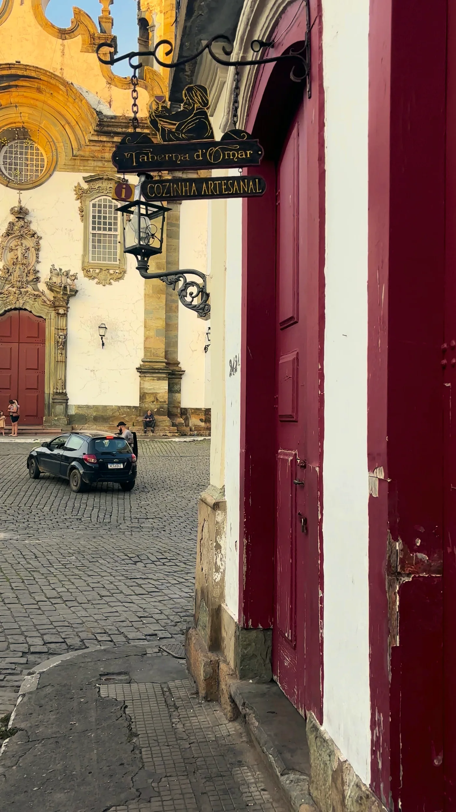
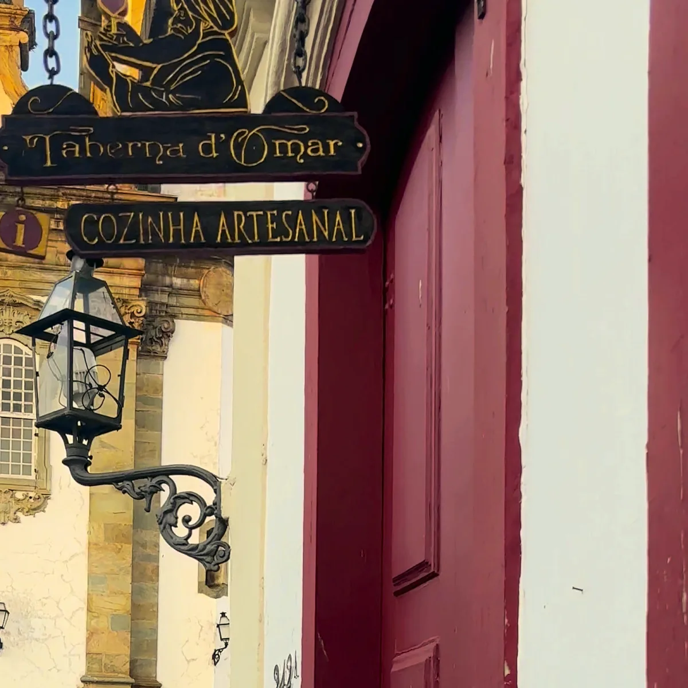
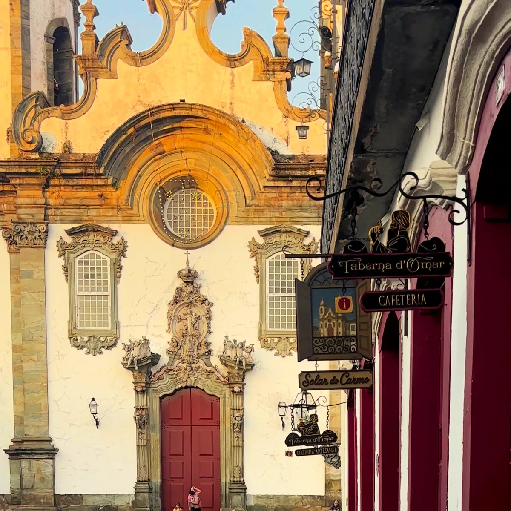
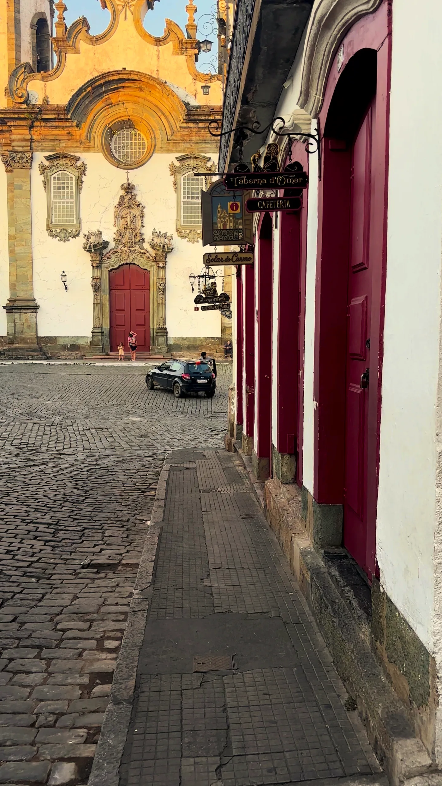
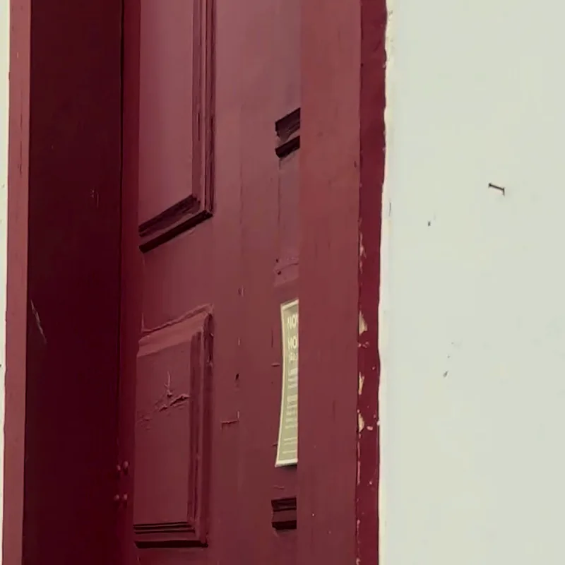

São João del-Rei
Rua Getúlio Vargas, 238
Centro histórico, em frente à Igreja de São Francisco de Assis.
Centro histórico
Uma casa de portas vermelhas na rua de pedra do centro histórico. Pão, café e comida feita à mão, com a igreja do outro lado do largo.
Não trabalhamos com reserva. É só chegar.

A Taberna fica numa das ruas mais bonitas de Minas: calçada de pedra, portas vermelhas e o barroco da São Francisco no fim do largo. Lá dentro, a cozinha é feita sem pressa.



Para o café da manhã, o almoço ou o fim de tarde. Chegue, escolha a mesa e fique o tempo que quiser.

Centro histórico, em frente à Igreja de São Francisco de Assis.
No centro histórico de Tiradentes, a mesma cozinha artesanal.